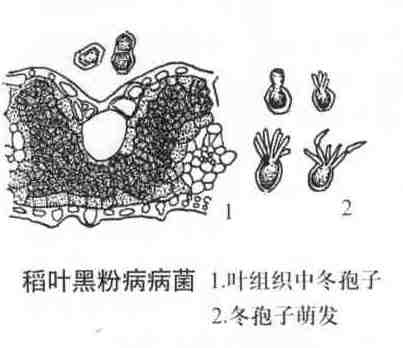

稻叶黑粉病
病害别名：叶片
为害部位：秧苗、节
病害性质：一般病害
病原：稻叶黑粉菌[Entyloma oryzae Syd.)稻叶黑粉病病菌
病害表现：稻叶黑粉病只为害叶片，病斑初起为褐色，沿叶脉呈断续线条状，后变黑色，稍隆起。严重时从叶尖开始逐渐枯死，且破裂成丝状。
 稻叶黑粉病病叶
稻叶黑粉病病叶
发病规律：病斑的厚垣孢子在病草上越冬，第二年夏季萌发长出担孢子及次生小孢子，借空气传播为害。一般在缺肥、生长不良情况下发病较多。杂交稻尤其发病重。
病害防治: 一是合理施肥，避免水稻因缺肥而造成早衰，并注意增施磷、钾肥以减轻发病；二是结合防治杂交稻穗期多种病害，喷施粉锈宁或禾枯灵防病防衰。